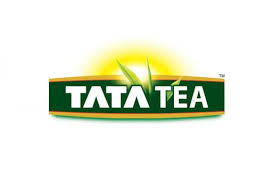
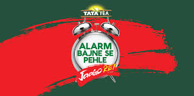
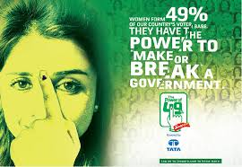

How India's tea giant transformed daily consumption into national social movements and cultural benchmarks.

Tata Tea didn't sell tea—they sold awakening. Jaago Re and Power of 49 transformed daily consumption into national conversations around civic duty and women empowerment.
Case study analyzes Jaago Re — redefining brand purpose through voter awakening — and Power of 49 — data-driven women empowerment movement. Both created emotional ownership beyond products.
FMCG benchmark: connect daily rituals with social relevance.
Competitors fought on price/taste. Tata Tea chose social awakening. Insight: India complains about system but doesn't vote. "Jaago Re" had dual genius—morning tea + civic responsibility.
Campaign became movement, not ad. Targeted young urban first-time voters. Website simplified voter registration—turning awareness into action. People owned the message emotionally.
"Jaago Re" wasn't tea marketing—it was national conversation. TV + digital + on-ground created participation funnel that built unbreakable brand equity."
Funnel excellence: Awareness → Emotional trigger → Action platform → Voter registration. Short-term sales traded for long-term cultural dominance.

Jaago Re evolution: 49% women voters = massive untapped power. Insight: women's concerns ignored in politics. Tata Tea converted statistic into identity movement.
Urban/semi-urban women felt ownership: "49% is power." Storytelling around safety, health, education exploded engagement. Campaign became public conversation, not ad.
"Data point became emotional movement. Millions engaged through issue collection → manifesto → political influence. Election timing + women focus = perfect execution."
Masterful funnel: Awareness → Engagement → Issue platform → Collective manifesto → Media amplification. TV, digital, PR, influencers created national conversation.

"Jaago Re" worked as tea wake-up + social awakening. Product relevance + purpose relevance = unstoppable positioning.
Website voter registration turned viewers into participants. Awareness campaigns fail without action conversion.
Statistic became identity. Data humanized into emotional movement creates stronger engagement than generic messaging.
Safety, health, education connected emotionally. Purpose works when built on real audience problems.
Issue collection → public manifesto created ownership. Participation beats observation every time.
Perfect civic cycle timing maximized relevance and media pickup. Cultural moments multiply campaign impact.
Tata Tea redefined FMCG marketing: Jaago Re created civic awakening, Power of 49 empowered women voters. Tea became symbol of social responsibility.
Universal blueprint: connect daily rituals with cultural relevance + participation funnels. Tata Tea built movements, not ads—creating emotional equity beyond sales.
Brands grow when they give audiences ownership of bigger ideas.
At Brand Business Talk, we help brands with research, strategy, market insights, and growth recommendations. Let's build your brand growth strategy together.